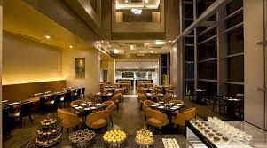

"The only thing I like more than talking about food is eating."
Food is not just fuel; it is the universal language of connection, culture and comfort. Talking about me, even I usually bond with people by eating; if our
food preferances match(veg/non-veg/vegan) or the favorite cuisines.
My favorite cuisine is Italian.
Fetuccine Alfredo is my favorite Italian dish. I want to share a short story about the best meal I had. The best Italian meal I ever had arrived on a quiet evening,
when the world felt unhurried. A plate of freshly made fettuccine Alfredo sat before me, its creamy sauce clinging perfectly to each ribbon of pasta. The
aroma of butter, garlic, and parmesan rose gently, inviting the first bite. It was rich yet delicate, each flavor balanced with quiet precision. Beside it,
warm garlic bread crackled softly, and a simple tomato basil salad added brightness. Nothing was extravagant, yet everything felt complete. In that moment,
it wasn’t just food—it was comfort, warmth, and a memory I still return to. The cafe's that delighted me with their sumptuous meal was 'Nero by Nini's'.
My 5 favorite Italian dishes are:
- Fetuccine Alfredo
- Margherita Pizza
- Lasagna
- Spaghetti Carboanara
- Tiramisu
I always advice people to try Italian from authentic Italian cuisines restaurernts/cafe. The 3 restaurents that I'd like to try next are:
- Caffè Allora
- Corbezzolo
- Toroni Italian Ristorante
My favorite restaurent for the Italian cuisine is Tinello.

TINELLO
Food delievery app comparisons
| App Name |
Delivery Charges |
Ratings |
| Swiggy |
Rs 42.50 |
4.5/5 |
| Zomato |
Rs 41.00 |
4.0/5 |
| Uber Eats |
Rs 44.25 |
4.4/5 |